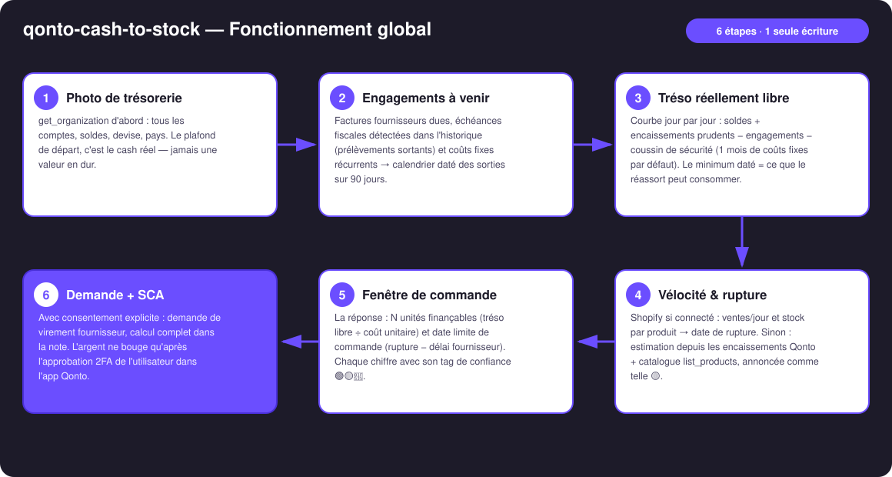
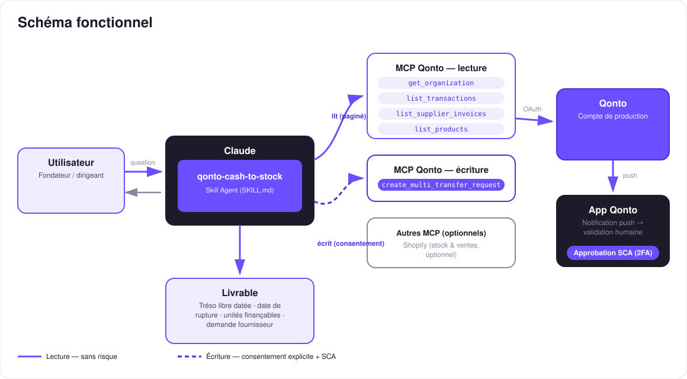

Le réassort sous contrainte de cash — combien d'unités commander sans mettre le compte en danger, et quand.
Le vrai plafond du réassort e-commerce, ce n'est pas la demande — c'est la trésorerie. Commander trop, c'est mettre le compte en danger le jour où la TVA tombe ; commander trop peu, c'est la rupture qui coupe les ventes. Le skill répond à LA question : combien d'unités, et quand :
Soldes de tous les comptes − fournisseurs à échoir − impôts détectés − coûts fixes − coussin de sécurité. Le minimum de la courbe, daté.
Shopify si connecté (ventes/jour, stock par produit) ; sinon estimation depuis les encaissements + catalogue, annoncée comme telle 🟡.
Tréso libre · date de rupture · unités finançables · date limite de commande — chaque chiffre taggé 🟢🟡🔵.
Demande de virement fournisseur quand tu décides — l'argent ne bouge qu'après ton approbation SCA dans l'app.
| Prérequis | Détail | Obligatoire |
|---|---|---|
| Compte Qonto production | Le skill s'adapte à toute organisation — get_organization d'abord, zéro donnée en dur | ✅ |
| Pays | Échéances fiscales détectées depuis l'historique partout ; affinage calendrier : France. Autres pays Qonto (DE, ES, IT…) : seuls les prélèvements observés sont projetés — jamais d'échéance inventée | ℹ️ détecté |
| MCP Qonto connecté | Connecteur officiel (claude.ai / Claude Desktop), login OAuth | ✅ |
| MCP Shopify | Optionnel, détecté dynamiquement : ventes/jour + stock par produit. Sans lui : mode dégradé propre (estimation 🟡 depuis les encaissements + catalogue) | ⭕ recommandé |
| Historique ≥ 3-6 mois | En dessous : dégradation honnête (tags 🟡 + avertissement) ; 24-36 mois pour les cadences fiscales annuelles | ⭕ |
| Activité e-commerce avec fournisseurs | Sinon le skill reste un calculateur de tréso réellement libre | ⭕ |

list_products — chaque chiffre dérivé taggé 🟡, jamais déguisé en donnée d'inventaireqonto-tax-pilot, réutilisée telle quelle s'il est installé
Le modèle de sécurité, pas une limitation : la lecture est sans risque ; l'écriture exige le consentement explicite dans la conversation et ne produit qu'une demande. Seule la SCA (2FA) du titulaire, dans l'app Qonto, déplace l'argent. Ni Claude ni le MCP ne le peuvent.
| Chiffre | Comment il est obtenu | Tag |
|---|---|---|
| Tréso libre après échéances | Minimum de la courbe 90 j : soldes − fournisseurs − impôts détectés − coûts fixes − coussin (1 mois de coûts fixes par défaut, ajustable) | 🟢/🟡 |
| Date de rupture | Stock ÷ vélocité (Shopify run-analytics-query + get-inventory-levels), ou estimation encaissements + catalogue | 🟢 avec Shopify · 🟡 sans |
| Unités finançables | Tréso libre à la date de paiement ÷ coût unitaire débarqué (confirmé par l'utilisateur) | 🔵 dépend du coût |
| Date limite de commande | Date de rupture − délai fournisseur (demandé une fois) | 🔵 |
Exemple (chiffres fictifs, à titre d'illustration) : « Tréso libre après échéances : 8 400 €. Rupture prévue le 28/09. Coût unitaire 6,50 € → 1 290 unités finançables ; livraison en 3 semaines → commande avant le 07/09. »
| Sortie | Format | Quand |
|---|---|---|
| Réponse dans la conversation | Tableaux markdown (engagements, courbe résumée, 4 chiffres, récap demande) | Toujours — c'est la base |
| Dashboard interactif | Fichier/artifact HTML : courbe de tréso libre, échéances en marqueurs, compte à rebours rupture, jauge d'unités | Si l'hôte affiche les fichiers (artifacts claude.ai, Claude Desktop, Claude Code) ; repli automatique sur les tableaux sinon |
| Note de la demande Qonto | Texte joint à la demande de virement, visible à l'approbation SCA : tout le calcul | À chaque demande créée |
La démo ≤ 3 min jointe à la PR suit le storyboard : le dilemme du réassort → engagements & tréso libre → rupture datée & unités finançables → approbation SCA filmée sur téléphone → dashboard final. Le script détaillé de tournage est conservé en interne (hors dépôt).
| Idée | Effort | Note |
|---|---|---|
| Multi-fournisseurs : arbitrage d'un budget entre plusieurs commandes | Moyen | Réutilise la courbe de tréso libre |
| Saisonnalité fine (vélocité pondérée par mois, soldes, fêtes) | Moyen | Shopify run-analytics-query sur 12 mois |
| Rappel « date limite de commande » dans le calendrier (MCP détecté dynamiquement) | Faible | Multi-MCP optionnel, dans l'esprit du kickoff |
| Scénarios de paiement fournisseur (acompte 30 % + solde à livraison) | Faible | Deux demandes datées au lieu d'une |
decline_request après chaque test (request_type: "multi_transfers", pluriel)